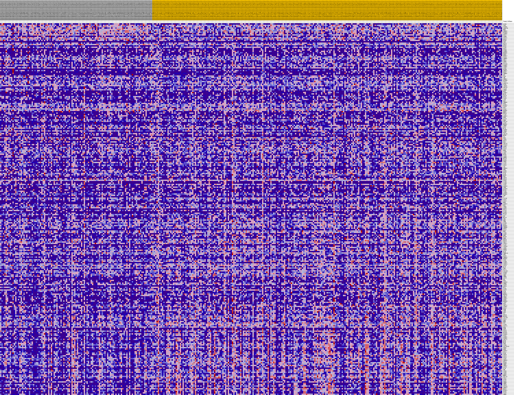
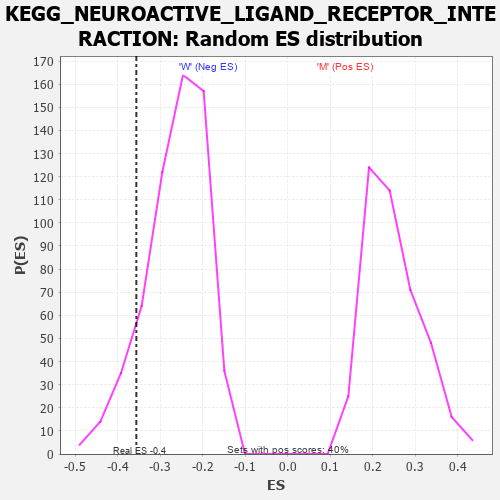

Profile of the Running ES Score & Positions of GeneSet Members on the Rank Ordered List
| Dataset | MUC16.MUC16.cls#M_versus_W.MUC16.cls#M_versus_W_repos |
| Phenotype | MUC16.cls#M_versus_W_repos |
| Upregulated in class | W |
| GeneSet | KEGG_NEUROACTIVE_LIGAND_RECEPTOR_INTERACTION |
| Enrichment Score (ES) | -0.35646477 |
| Normalized Enrichment Score (NES) | -1.357638 |
| Nominal p-value | 0.10402685 |
| FDR q-value | 1.0 |
| FWER p-Value | 0.897 |
| PROBE | DESCRIPTION (from dataset) | GENE SYMBOL | GENE_TITLE | RANK IN GENE LIST | RANK METRIC SCORE | RUNNING ES | CORE ENRICHMENT | |
|---|---|---|---|---|---|---|---|---|
| 1 | SSTR5 | na | 623 | 0.172 | -0.0039 | No | ||
| 2 | TSPO | na | 647 | 0.170 | 0.0030 | No | ||
| 3 | PTGER4 | na | 655 | 0.169 | 0.0101 | No | ||
| 4 | ADORA2B | na | 994 | 0.150 | 0.0105 | No | ||
| 5 | HRH1 | na | 1035 | 0.148 | 0.0161 | No | ||
| 6 | CHRNA5 | na | 1238 | 0.141 | 0.0185 | No | ||
| 7 | GRIN2D | na | 1252 | 0.140 | 0.0243 | No | ||
| 8 | GABRB3 | na | 1597 | 0.129 | 0.0236 | No | ||
| 9 | F2RL1 | na | 1640 | 0.127 | 0.0283 | No | ||
| 10 | GABRQ | na | 1725 | 0.124 | 0.0321 | No | ||
| 11 | P2RY11 | na | 2166 | 0.112 | 0.0290 | No | ||
| 12 | PRSS3 | na | 2716 | 0.101 | 0.0234 | No | ||
| 13 | GRIN1 | na | 2910 | 0.098 | 0.0241 | No | ||
| 14 | CSH1 | na | 3137 | 0.094 | 0.0240 | No | ||
| 15 | GRIA3 | na | 3192 | 0.093 | 0.0271 | No | ||
| 16 | GPR35 | na | 3394 | 0.090 | 0.0273 | No | ||
| 17 | GRIK1 | na | 3445 | 0.090 | 0.0303 | No | ||
| 18 | C5AR1 | na | 3949 | 0.083 | 0.0247 | No | ||
| 19 | PRSS1 | na | 3975 | 0.082 | 0.0278 | No | ||
| 20 | CCKBR | na | 4080 | 0.081 | 0.0294 | No | ||
| 21 | GABRR1 | na | 4143 | 0.080 | 0.0317 | No | ||
| 22 | NPBWR2 | na | 4219 | 0.079 | 0.0337 | No | ||
| 23 | OPRK1 | na | 4314 | 0.078 | 0.0354 | No | ||
| 24 | MTNR1A | na | 4677 | 0.073 | 0.0319 | No | ||
| 25 | P2RY8 | na | 4883 | 0.071 | 0.0312 | No | ||
| 26 | CHRNB1 | na | 5025 | 0.069 | 0.0317 | No | ||
| 27 | OPRL1 | na | 5029 | 0.069 | 0.0346 | No | ||
| 28 | CHRM1 | na | 5093 | 0.068 | 0.0364 | No | ||
| 29 | GLRA3 | na | 5264 | 0.066 | 0.0361 | No | ||
| 30 | KISS1R | na | 5529 | 0.063 | 0.0341 | No | ||
| 31 | GABRR2 | na | 5775 | 0.061 | 0.0322 | No | ||
| 32 | GABRB1 | na | 5885 | 0.060 | 0.0329 | No | ||
| 33 | S1PR2 | na | 5962 | 0.059 | 0.0340 | No | ||
| 34 | PRLHR | na | 5983 | 0.059 | 0.0362 | No | ||
| 35 | CHRNA2 | na | 5987 | 0.059 | 0.0387 | No | ||
| 36 | PRSS2 | na | 5999 | 0.059 | 0.0410 | No | ||
| 37 | CHRNB2 | na | 6088 | 0.058 | 0.0419 | No | ||
| 38 | GH2 | na | 6159 | 0.057 | 0.0431 | No | ||
| 39 | GZMA | na | 6467 | 0.054 | 0.0398 | No | ||
| 40 | LHB | na | 6720 | 0.051 | 0.0375 | No | ||
| 41 | CHRNA7 | na | 6834 | 0.050 | 0.0376 | No | ||
| 42 | GRIN3B | na | 6956 | 0.049 | 0.0375 | No | ||
| 43 | P2RX5 | na | 7024 | 0.049 | 0.0384 | No | ||
| 44 | ADORA2A | na | 7030 | 0.049 | 0.0404 | No | ||
| 45 | SSTR1 | na | 7244 | 0.047 | 0.0386 | No | ||
| 46 | LTB4R2 | na | 7304 | 0.047 | 0.0395 | No | ||
| 47 | ADRA1B | na | 7450 | 0.045 | 0.0388 | No | ||
| 48 | CALCR | na | 7631 | 0.044 | 0.0374 | No | ||
| 49 | CHRNE | na | 7938 | 0.042 | 0.0337 | No | ||
| 50 | BRS3 | na | 8397 | 0.038 | 0.0270 | No | ||
| 51 | GABRG2 | na | 8733 | 0.035 | 0.0224 | No | ||
| 52 | MC3R | na | 9236 | 0.031 | 0.0146 | No | ||
| 53 | UTS2R | na | 9527 | 0.029 | 0.0106 | No | ||
| 54 | RXFP1 | na | 9537 | 0.028 | 0.0116 | No | ||
| 55 | TACR3 | na | 9711 | 0.027 | 0.0096 | No | ||
| 56 | CTSG | na | 9974 | 0.025 | 0.0059 | No | ||
| 57 | DRD2 | na | 10218 | 0.023 | 0.0025 | No | ||
| 58 | CHRNB3 | na | 10411 | 0.022 | -0.0000 | No | ||
| 59 | HTR6 | na | 10623 | 0.020 | -0.0030 | No | ||
| 60 | GRIN3A | na | 10817 | 0.019 | -0.0057 | No | ||
| 61 | P2RY4 | na | 10852 | 0.019 | -0.0055 | No | ||
| 62 | FPR2 | na | 10868 | 0.019 | -0.0050 | No | ||
| 63 | LPAR2 | na | 10977 | 0.018 | -0.0062 | No | ||
| 64 | BDKRB2 | na | 11196 | 0.016 | -0.0094 | No | ||
| 65 | NMUR2 | na | 11606 | 0.014 | -0.0163 | No | ||
| 66 | HTR1E | na | 11823 | 0.012 | -0.0197 | No | ||
| 67 | TAAR1 | na | 11881 | 0.012 | -0.0202 | No | ||
| 68 | GABRA2 | na | 11963 | 0.011 | -0.0212 | No | ||
| 69 | GHSR | na | 12018 | 0.011 | -0.0217 | No | ||
| 70 | GLP1R | na | 12174 | 0.010 | -0.0241 | No | ||
| 71 | GRM8 | na | 12497 | 0.008 | -0.0296 | No | ||
| 72 | GPR156 | na | 12688 | 0.006 | -0.0328 | No | ||
| 73 | AGTR2 | na | 12875 | 0.005 | -0.0360 | No | ||
| 74 | NPFFR2 | na | 12906 | 0.005 | -0.0363 | No | ||
| 75 | CHRM4 | na | 12925 | 0.005 | -0.0364 | No | ||
| 76 | PRLR | na | 13063 | 0.004 | -0.0387 | No | ||
| 77 | MC1R | na | 13094 | 0.004 | -0.0391 | No | ||
| 78 | GABBR2 | na | 13271 | 0.003 | -0.0422 | No | ||
| 79 | LTB4R | na | 13304 | 0.003 | -0.0427 | No | ||
| 80 | RXFP2 | na | 13486 | 0.001 | -0.0459 | No | ||
| 81 | ADRA2B | na | 15396 | -0.002 | -0.0805 | No | ||
| 82 | MCHR2 | na | 15814 | -0.004 | -0.0879 | No | ||
| 83 | CGA | na | 15823 | -0.004 | -0.0879 | No | ||
| 84 | FPR3 | na | 15937 | -0.005 | -0.0898 | No | ||
| 85 | VIPR1 | na | 16014 | -0.005 | -0.0909 | No | ||
| 86 | HTR2C | na | 16093 | -0.005 | -0.0921 | No | ||
| 87 | FPR1 | na | 16209 | -0.006 | -0.0939 | No | ||
| 88 | ADRA1D | na | 16640 | -0.009 | -0.1014 | No | ||
| 89 | P2RY10 | na | 16707 | -0.009 | -0.1022 | No | ||
| 90 | GABRE | na | 16830 | -0.010 | -0.1040 | No | ||
| 91 | GRIA4 | na | 17163 | -0.011 | -0.1096 | No | ||
| 92 | P2RY2 | na | 17363 | -0.012 | -0.1127 | No | ||
| 93 | HRH4 | na | 17577 | -0.013 | -0.1160 | No | ||
| 94 | S1PR4 | na | 17661 | -0.014 | -0.1169 | No | ||
| 95 | LEPR | na | 17701 | -0.014 | -0.1170 | No | ||
| 96 | NTSR2 | na | 17723 | -0.014 | -0.1168 | No | ||
| 97 | LPAR3 | na | 17807 | -0.015 | -0.1176 | No | ||
| 98 | GNRHR | na | 17886 | -0.015 | -0.1184 | No | ||
| 99 | NPY2R | na | 17888 | -0.015 | -0.1178 | No | ||
| 100 | GRIK4 | na | 18157 | -0.016 | -0.1219 | No | ||
| 101 | CRHR1 | na | 18785 | -0.020 | -0.1325 | No | ||
| 102 | C3AR1 | na | 19085 | -0.021 | -0.1370 | No | ||
| 103 | TACR1 | na | 19105 | -0.021 | -0.1365 | No | ||
| 104 | P2RX1 | na | 19257 | -0.022 | -0.1383 | No | ||
| 105 | LEP | na | 19451 | -0.023 | -0.1408 | No | ||
| 106 | CHRNA4 | na | 19509 | -0.023 | -0.1409 | No | ||
| 107 | GRM7 | na | 19571 | -0.023 | -0.1410 | No | ||
| 108 | SSTR3 | na | 19705 | -0.024 | -0.1424 | No | ||
| 109 | GRID2 | na | 20603 | -0.028 | -0.1575 | No | ||
| 110 | OXTR | na | 20698 | -0.028 | -0.1580 | No | ||
| 111 | MCHR1 | na | 21033 | -0.030 | -0.1627 | No | ||
| 112 | DRD1 | na | 21362 | -0.031 | -0.1674 | No | ||
| 113 | PTH2R | na | 21736 | -0.033 | -0.1727 | No | ||
| 114 | HTR1D | na | 21853 | -0.033 | -0.1734 | No | ||
| 115 | PARD3 | na | 21879 | -0.033 | -0.1724 | No | ||
| 116 | TAAR6 | na | 21904 | -0.034 | -0.1714 | No | ||
| 117 | TAAR8 | na | 21921 | -0.034 | -0.1702 | No | ||
| 118 | SSTR2 | na | 22240 | -0.035 | -0.1745 | No | ||
| 119 | GABRA4 | na | 22922 | -0.038 | -0.1853 | No | ||
| 120 | TSHB | na | 23326 | -0.040 | -0.1909 | No | ||
| 121 | GRIN2B | na | 23354 | -0.040 | -0.1897 | No | ||
| 122 | NTSR1 | na | 23361 | -0.040 | -0.1880 | No | ||
| 123 | TAAR5 | na | 23426 | -0.040 | -0.1875 | No | ||
| 124 | GABRB2 | na | 23472 | -0.040 | -0.1866 | No | ||
| 125 | GRIN2C | na | 23933 | -0.042 | -0.1931 | No | ||
| 126 | CNR2 | na | 23976 | -0.042 | -0.1921 | No | ||
| 127 | F2 | na | 24265 | -0.043 | -0.1954 | No | ||
| 128 | CALCRL | na | 24490 | -0.044 | -0.1976 | No | ||
| 129 | P2RY1 | na | 24651 | -0.045 | -0.1986 | No | ||
| 130 | P2RX2 | na | 24697 | -0.045 | -0.1975 | No | ||
| 131 | HRH3 | na | 25508 | -0.048 | -0.2101 | No | ||
| 132 | GABRA3 | na | 25671 | -0.049 | -0.2110 | No | ||
| 133 | HTR7 | na | 25714 | -0.049 | -0.2096 | No | ||
| 134 | ADRB1 | na | 25822 | -0.049 | -0.2095 | No | ||
| 135 | GABRD | na | 25917 | -0.050 | -0.2090 | No | ||
| 136 | HTR1A | na | 26289 | -0.051 | -0.2136 | No | ||
| 137 | GALR3 | na | 26321 | -0.051 | -0.2119 | No | ||
| 138 | TAAR9 | na | 26811 | -0.053 | -0.2185 | No | ||
| 139 | NPY5R | na | 26815 | -0.053 | -0.2163 | No | ||
| 140 | GALR2 | na | 27157 | -0.054 | -0.2202 | No | ||
| 141 | GH1 | na | 28042 | -0.057 | -0.2338 | No | ||
| 142 | NPY1R | na | 28179 | -0.058 | -0.2338 | No | ||
| 143 | CNR1 | na | 28272 | -0.058 | -0.2329 | No | ||
| 144 | GRM2 | na | 28339 | -0.058 | -0.2316 | No | ||
| 145 | TRHR | na | 28431 | -0.059 | -0.2307 | No | ||
| 146 | PTAFR | na | 29445 | -0.062 | -0.2465 | No | ||
| 147 | GRIK2 | na | 29657 | -0.063 | -0.2476 | No | ||
| 148 | BDKRB1 | na | 29709 | -0.063 | -0.2458 | No | ||
| 149 | CHRNB4 | na | 30103 | -0.064 | -0.2502 | No | ||
| 150 | GPR83 | na | 30284 | -0.065 | -0.2507 | No | ||
| 151 | GLRA2 | na | 30403 | -0.065 | -0.2500 | No | ||
| 152 | HRH2 | na | 30871 | -0.067 | -0.2556 | No | ||
| 153 | LPAR1 | na | 30876 | -0.067 | -0.2528 | No | ||
| 154 | GABRP | na | 30962 | -0.067 | -0.2515 | No | ||
| 155 | GRM3 | na | 31639 | -0.069 | -0.2608 | No | ||
| 156 | NPY4R | na | 31892 | -0.070 | -0.2624 | No | ||
| 157 | GRM4 | na | 32398 | -0.072 | -0.2685 | No | ||
| 158 | HTR1F | na | 32542 | -0.072 | -0.2679 | No | ||
| 159 | HTR2B | na | 33483 | -0.075 | -0.2818 | No | ||
| 160 | TRPV1 | na | 34014 | -0.077 | -0.2881 | No | ||
| 161 | ADORA1 | na | 34257 | -0.077 | -0.2892 | No | ||
| 162 | TAAR2 | na | 34544 | -0.078 | -0.2910 | No | ||
| 163 | AVPR1B | na | 34783 | -0.079 | -0.2919 | No | ||
| 164 | AVPR2 | na | 34843 | -0.079 | -0.2896 | No | ||
| 165 | GHRHR | na | 35001 | -0.080 | -0.2890 | No | ||
| 166 | P2RY6 | na | 35093 | -0.080 | -0.2872 | No | ||
| 167 | MC5R | na | 35411 | -0.081 | -0.2895 | No | ||
| 168 | CHRNA10 | na | 35763 | -0.082 | -0.2924 | No | ||
| 169 | GRM1 | na | 35837 | -0.082 | -0.2901 | No | ||
| 170 | GRIK3 | na | 35866 | -0.082 | -0.2871 | No | ||
| 171 | CHRNA9 | na | 35880 | -0.082 | -0.2838 | No | ||
| 172 | NPBWR1 | na | 37151 | -0.086 | -0.3032 | No | ||
| 173 | GIPR | na | 37251 | -0.087 | -0.3012 | No | ||
| 174 | APLNR | na | 38013 | -0.089 | -0.3112 | No | ||
| 175 | GABRG3 | na | 38120 | -0.089 | -0.3093 | No | ||
| 176 | AVPR1A | na | 38708 | -0.091 | -0.3161 | No | ||
| 177 | P2RX4 | na | 40404 | -0.097 | -0.3427 | No | ||
| 178 | MC2R | na | 40611 | -0.098 | -0.3423 | No | ||
| 179 | THRA | na | 40636 | -0.098 | -0.3385 | No | ||
| 180 | GRIA2 | na | 40704 | -0.098 | -0.3355 | No | ||
| 181 | CYSLTR2 | na | 40915 | -0.099 | -0.3351 | No | ||
| 182 | PTGER2 | na | 41238 | -0.100 | -0.3366 | No | ||
| 183 | PTGFR | na | 41880 | -0.102 | -0.3439 | No | ||
| 184 | THRB | na | 42036 | -0.103 | -0.3423 | No | ||
| 185 | CHRM5 | na | 42383 | -0.104 | -0.3441 | No | ||
| 186 | CCKAR | na | 42496 | -0.104 | -0.3416 | No | ||
| 187 | PRL | na | 42565 | -0.104 | -0.3384 | No | ||
| 188 | DRD3 | na | 43562 | -0.108 | -0.3518 | Yes | ||
| 189 | GABRA6 | na | 43754 | -0.109 | -0.3506 | Yes | ||
| 190 | CHRM3 | na | 43983 | -0.110 | -0.3500 | Yes | ||
| 191 | PTGDR | na | 44171 | -0.110 | -0.3487 | Yes | ||
| 192 | GPR50 | na | 44231 | -0.111 | -0.3450 | Yes | ||
| 193 | MAS1 | na | 44735 | -0.112 | -0.3493 | Yes | ||
| 194 | SSTR4 | na | 44821 | -0.113 | -0.3460 | Yes | ||
| 195 | P2RX7 | na | 45043 | -0.114 | -0.3451 | Yes | ||
| 196 | GCGR | na | 45080 | -0.114 | -0.3408 | Yes | ||
| 197 | OPRD1 | na | 45168 | -0.114 | -0.3375 | Yes | ||
| 198 | NPFFR1 | na | 45247 | -0.114 | -0.3340 | Yes | ||
| 199 | ADRA2C | na | 45588 | -0.116 | -0.3352 | Yes | ||
| 200 | CHRND | na | 45609 | -0.116 | -0.3305 | Yes | ||
| 201 | GABRA1 | na | 45982 | -0.118 | -0.3322 | Yes | ||
| 202 | OPRM1 | na | 46145 | -0.118 | -0.3301 | Yes | ||
| 203 | MTNR1B | na | 46523 | -0.120 | -0.3318 | Yes | ||
| 204 | VIPR2 | na | 46655 | -0.121 | -0.3290 | Yes | ||
| 205 | HTR4 | na | 46919 | -0.122 | -0.3285 | Yes | ||
| 206 | ADRA2A | na | 47042 | -0.123 | -0.3254 | Yes | ||
| 207 | GABBR1 | na | 47124 | -0.123 | -0.3216 | Yes | ||
| 208 | GLRA1 | na | 47225 | -0.123 | -0.3181 | Yes | ||
| 209 | FSHR | na | 47313 | -0.124 | -0.3143 | Yes | ||
| 210 | TSHR | na | 48078 | -0.128 | -0.3227 | Yes | ||
| 211 | DRD5 | na | 48155 | -0.128 | -0.3186 | Yes | ||
| 212 | PLG | na | 48750 | -0.132 | -0.3237 | Yes | ||
| 213 | HTR1B | na | 48998 | -0.133 | -0.3225 | Yes | ||
| 214 | HCRTR1 | na | 49281 | -0.135 | -0.3218 | Yes | ||
| 215 | CYSLTR1 | na | 49707 | -0.138 | -0.3236 | Yes | ||
| 216 | F2RL3 | na | 49758 | -0.138 | -0.3185 | Yes | ||
| 217 | GRM5 | na | 49821 | -0.139 | -0.3137 | Yes | ||
| 218 | NMBR | na | 49881 | -0.139 | -0.3088 | Yes | ||
| 219 | F2R | na | 50380 | -0.142 | -0.3117 | Yes | ||
| 220 | LPAR6 | na | 50383 | -0.142 | -0.3056 | Yes | ||
| 221 | P2RY13 | na | 50395 | -0.142 | -0.2997 | Yes | ||
| 222 | DRD4 | na | 50676 | -0.145 | -0.2985 | Yes | ||
| 223 | FSHB | na | 50687 | -0.145 | -0.2925 | Yes | ||
| 224 | HTR5A | na | 50729 | -0.145 | -0.2870 | Yes | ||
| 225 | PTGIR | na | 50850 | -0.146 | -0.2829 | Yes | ||
| 226 | HCRTR2 | na | 50916 | -0.147 | -0.2777 | Yes | ||
| 227 | PTGER3 | na | 50949 | -0.147 | -0.2720 | Yes | ||
| 228 | GRID1 | na | 51132 | -0.149 | -0.2689 | Yes | ||
| 229 | GABRG1 | na | 51169 | -0.149 | -0.2632 | Yes | ||
| 230 | PTGER1 | na | 51768 | -0.154 | -0.2674 | Yes | ||
| 231 | ADRA1A | na | 51900 | -0.156 | -0.2630 | Yes | ||
| 232 | MLNR | na | 51942 | -0.156 | -0.2571 | Yes | ||
| 233 | MC4R | na | 51943 | -0.156 | -0.2503 | Yes | ||
| 234 | GRM6 | na | 52471 | -0.162 | -0.2529 | Yes | ||
| 235 | LPAR4 | na | 52540 | -0.163 | -0.2471 | Yes | ||
| 236 | ADCYAP1R1 | na | 52551 | -0.164 | -0.2402 | Yes | ||
| 237 | EDNRA | na | 52579 | -0.164 | -0.2337 | Yes | ||
| 238 | GRPR | na | 52608 | -0.164 | -0.2271 | Yes | ||
| 239 | GABRA5 | na | 52751 | -0.166 | -0.2225 | Yes | ||
| 240 | GRIA1 | na | 52771 | -0.167 | -0.2157 | Yes | ||
| 241 | GLRB | na | 52849 | -0.168 | -0.2098 | Yes | ||
| 242 | PTH1R | na | 52870 | -0.168 | -0.2030 | Yes | ||
| 243 | P2RX3 | na | 52899 | -0.168 | -0.1962 | Yes | ||
| 244 | P2RX6 | na | 52975 | -0.170 | -0.1903 | Yes | ||
| 245 | S1PR1 | na | 53050 | -0.171 | -0.1843 | Yes | ||
| 246 | CHRNA6 | na | 53071 | -0.171 | -0.1773 | Yes | ||
| 247 | HTR2A | na | 53133 | -0.172 | -0.1709 | Yes | ||
| 248 | EDNRB | na | 53206 | -0.174 | -0.1648 | Yes | ||
| 249 | CRHR2 | na | 53269 | -0.175 | -0.1584 | Yes | ||
| 250 | CHRNA1 | na | 53333 | -0.176 | -0.1519 | Yes | ||
| 251 | GLP2R | na | 53339 | -0.176 | -0.1444 | Yes | ||
| 252 | SCTR | na | 53342 | -0.176 | -0.1368 | Yes | ||
| 253 | GHR | na | 53437 | -0.178 | -0.1309 | Yes | ||
| 254 | S1PR3 | na | 53447 | -0.178 | -0.1234 | Yes | ||
| 255 | S1PR5 | na | 53522 | -0.180 | -0.1170 | Yes | ||
| 256 | ADRB3 | na | 53529 | -0.180 | -0.1093 | Yes | ||
| 257 | NMUR1 | na | 53553 | -0.180 | -0.1020 | Yes | ||
| 258 | TBXA2R | na | 53813 | -0.187 | -0.0986 | Yes | ||
| 259 | F2RL2 | na | 53976 | -0.191 | -0.0933 | Yes | ||
| 260 | AGTR1 | na | 54037 | -0.193 | -0.0861 | Yes | ||
| 261 | GALR1 | na | 54360 | -0.202 | -0.0833 | Yes | ||
| 262 | CHRNG | na | 54505 | -0.208 | -0.0769 | Yes | ||
| 263 | CHRM2 | na | 54727 | -0.219 | -0.0715 | Yes | ||
| 264 | LHCGR | na | 54767 | -0.222 | -0.0626 | Yes | ||
| 265 | P2RY14 | na | 54779 | -0.223 | -0.0533 | Yes | ||
| 266 | CHRNA3 | na | 54865 | -0.227 | -0.0450 | Yes | ||
| 267 | NR3C1 | na | 54967 | -0.234 | -0.0367 | Yes | ||
| 268 | GRIN2A | na | 55004 | -0.237 | -0.0272 | Yes | ||
| 269 | GRIK5 | na | 55047 | -0.241 | -0.0175 | Yes | ||
| 270 | TACR2 | na | 55114 | -0.249 | -0.0080 | Yes | ||
| 271 | ADRB2 | na | 55130 | -0.250 | 0.0025 | Yes |

